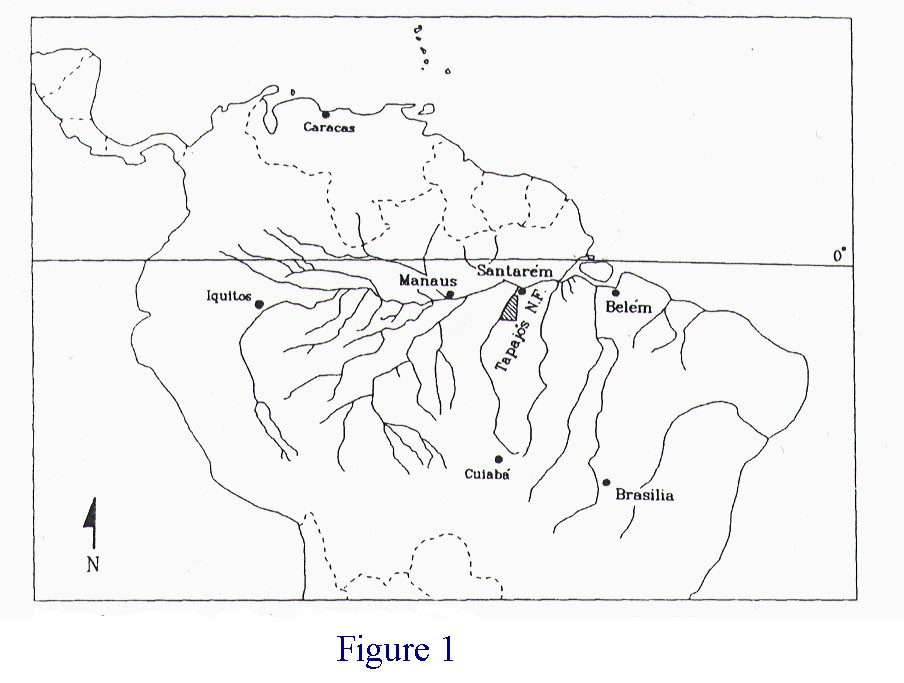
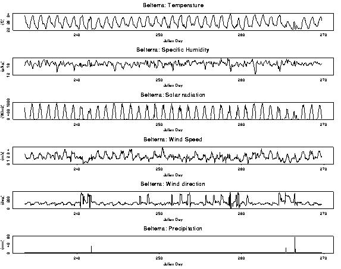
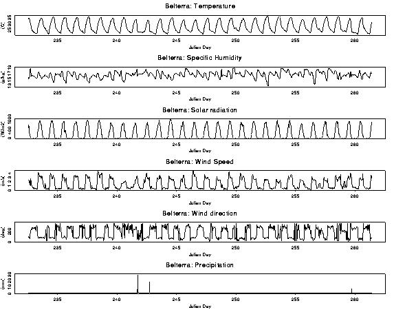
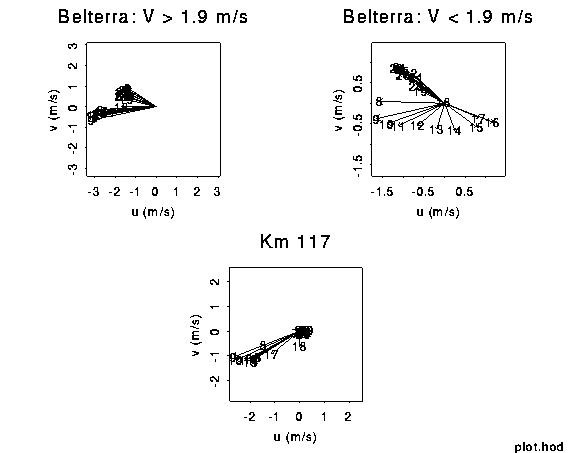
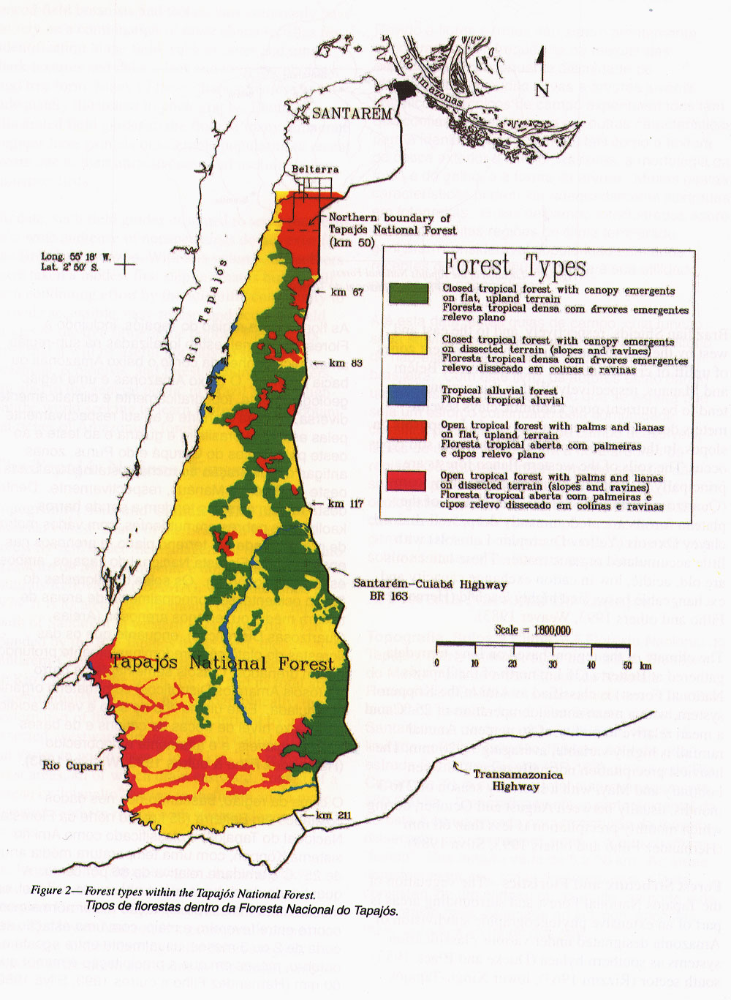
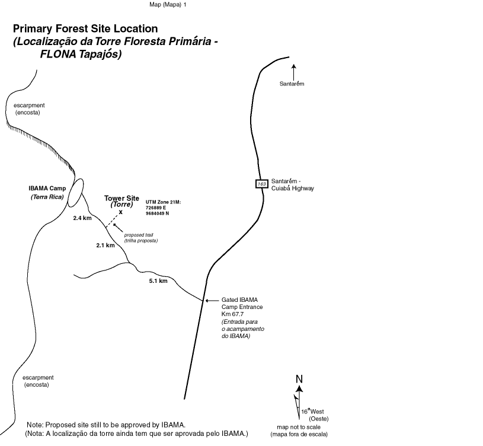
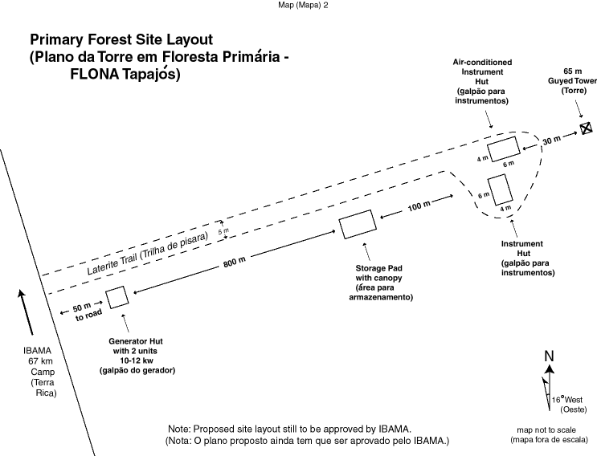

Site Scouting and Selection for the Tapajós National Forest and Santarém/Belterra, Pará.
Prepared by Michael Keller and Patrick Crill with contributions from the Santarem Site Selection Team. Robin Martin assisted with the preparation of this report.
1.0 Introduction
LBA-ECO is one component of the Brazilian led Large Scale Biosphere-Atmosphere in Amazonia (LBA). Much of the field work of the LBA-ECO Project will be concentrated in the region of the Tapajós National Forest (TNF) in the Municipality of Belterra, Pará and adjacent areas in the Municipality of Santarém, Pará. Although this is one of many research areas, infrastructure requirements for micrometeorological towers, drove the Science Team for LBA-ECO to make an early selection for these sites. Participants in the LBA Ecology project conducted a site selection trip from November 30 through December 19, 1999. Field visits to the TNF were authorized by IBAMA and coordinated with Selma Bara Melgaço supervisor of the TNF. All field activity was coordinated through the Santarém office of EMBRAPA represented by Raimundo Cosme.
1.1 Objective. The primary objective of the site scouting and selection exercise was to determine locations for 3 micro-meteorological towers for biosphere-atmosphere exchange and meteorological studies. While the small scouting and decision teams gained much valuable information about the region, they did not attempt to select all sites in the TNF region that will be used through the LBA-ECO project. This report focuses on the selection of sites for the 3 micro-meteorological towers.
1.2 Preparation. LBA-ECO Science Team members and other interested parties (e.g. LBA Project Office, IBAMA, EMBRAPA) were consulted regarding the requirements for each of 3 sites. The requirements derive primarily from the science planning and investigator proposals. A telephone conference was held on October 28 to discuss the sites requirements and the logistics for the field trip. The general requirements for all sites follow: (i) Fetch distances for relatively homogeneous vegetation on terrain with minimal topographic relief; (ii) distances from all-season roads with the ability to locate a diesel generator and fuel depot nearby the road downwind of the tower; (iii) all 3 sites located on similar soils and native vegetation at all sites comparable prior to disturbance; (iv) permission from the land-holder to site a semi-permanent installation; (v)minimize pollution influence from surrounding farms and towns. Specific requirements for individual sites will be discussed in the Decision Team section (4.0). General guidelines for the requirements (i) and (ii) are presented in Table 1.
Table 1. General guidelines for site selection.
| Site | Fetch (m) |
Distance to Road (m) |
|---|---|---|
| Forest | 2000-5000 |
1000 |
| Logged Forest | 1000-2000 |
500 |
| Pasture | 200-500 |
200 |
The Science Team collected information regarding the area from published work as well as from the personal reports of Science Team members with previous research experience in the TNF area. The LBA-ECO Project Office provided 21 images of the TNF region based on bands 3,4, and 5 of a Landsat TM image acquired 27 July 1997. Images printed at 1:100000 scale served as the main base map for the field teams.
1.3 Scouting Team. The Scouting Team worked in the TNF region from November 30 until the arrival of the Decision Team. This group consisted of a team leader, a soil survey specialist, a micrometeorologist, a botanical parataxonomist, and a biogeochemist. Two students made intensive surveys in the logging area. The Team made contacts with IBAMA and EMBRAPA and then visited a 4 forest areas, 1 logging area, and 6 medium sized and large ranches for pastures. Details of the scouting visits are described in section 3.
1.4 Decision Team. The Decision Team worked in the TNF region from December 13-18. Decision team participants included members of the Scouting Team as well as Science Team members who volunteered for this activity. The team membership is identified in Table 2.
1.5 Participants. Six LBA Ecology investigator groups and the project office were represented.
Table 2. Participants in the Scouting (S) and Decision (D) teams.
Participant |
Institution |
Specialty |
Team |
|---|---|---|---|
Plinio Camargo |
Universidade de Sao Paulo, CENA |
Biogeochemistry |
D |
Mark Cochrane |
Woods Hole Research Center |
Ecology |
D |
Manoel Cordeiro |
Private Consultant |
Plant Parataxonimist |
S |
Raimundo Cosme |
EMBRAPA Amazonia Oriental |
Soils |
S and D |
Patrick Crill |
University of New Hampshire |
Biogeochemistry |
S and D |
David Fitzjarrald |
SUNY Albany |
Meteorology |
D |
Mike Goulden |
University of California - Irvine |
Plant Physiology |
D |
Elizabeth Hammond Pyle |
Harvard University |
Ecology |
D |
Dan Hodkinson |
NASA/GSFC |
Logistics |
D |
Michael Keller |
USDA Forest Service |
Biogeochemistry |
D |
Jason Neff |
Stanford University |
Biogeochemistry |
S |
Megan McGroddy |
University of California - Berkeley |
Biogeochemistry |
S |
Scott Miller |
University of California - Irvine |
Meteorology |
D |
Osvaldo Moraes |
Universidade Federal de Santa Maria |
Meteorology |
D |
Bill Munger |
Harvard University |
Atmospheric Chemistry |
D |
Humberto Rocha |
Universidade de Sao Paulo |
Meteorology |
D |
Enir Salazar |
University of California - Irvine |
Biogeochemistry |
D |
Ricardo Sakai |
SUNY Albany |
Meteorology |
S |
Whendee Silver |
University of California - Berkeley |
Biogeochemistry |
S and D |
Sue Trumbore |
University of California - Irvine |
Biogeochemistry |
D |
Steve Wofsy |
Harvard University |
Atmospheric Chemistry |
D |
Lisa Zweede |
NASA/GSFC |
Logistics |
D |
1.6 Logistics. The Scouting and Decision Team members who were not residents of Santarém lodged at the Amazon Park Hotel. The BR-163 (Santarém-Cuiaba) Highway was paved to a distance of about 83 km south of the city at the time of the survey. The scouting team used both a Toyota Bandeirante which belongs to the Tropical Forest Foundation and a Land Rover property of EMBRAPA. A 9-passenger van (Besta) was rented with a driver to increase the transport capacity for the Decision Team.
2.0 Setting
The TNF, approximately 600,000 ha of protected old-growth forest managed by the Instituto Brasileiro do Meio Ambiente e dos Recursos Naturais Renovaveis (IBAMA) , is located only 50 km south of Santarém, Pará, Brazil along the BR-163 Santarém-Cuiaba highway Figure 1.

Figure 1. Location Map of the Tapajós National Forest (from Parrotta et al. 1995).
The road runs south from Santarém, ascending about 100 m from the Tapajós-Amazon rivers up a steep scarp to a broad elevated plateau. The road remains on the plateau for more than 100 km. The road was recently paved to km 83, to be extended to km 90 by the end of 1998.
Santarém, a port city of about 240,000 inhabitants located at the confluence of the Tapajós and Amazon Rivers has an airport with regular jet service. A developing agricultural countryside in the vicinity of Santarém offers many opportunities for the study of land use change. Selective logging is particularly important to the economy of Santarém. Active pastures line most of the east side of the BR-163 road, in some locations extending 10 km or more to the east.
2.1 Climate and Weather. (Fitzjarrald/Sakai)
The TNF is an area of forested vegetation wedged between a managed mosaic of forests, pastures, agricultural fields and secondary succession to the east and the expansive Tapajos River to the west. With predominant easterlies during much of the year, one can expect a less turbulent but still convective boundary layer to grow from the forested edge to the west, as the air passes from the hot, smoother flow over the pastures, to the rough, relatively cooler near surface air over the TNF. Carbon uptake as measured at towers in the TNF may present a biased view of the regional situation because of variations in cloudiness. At least during the dry season, presence of clouds is strongly determined by the strength of the easterlies and by proximity to the river. Conditions further inland can be somewhat different than over the TNF. Judging from a reduced tendency for afternoon wind shifts at Belterra, we infer that the direct importance of the river breeze circulation has already been seen to wane with the onset of the rainy season. However, results from ABLE-2 indicate that a convergence zone can be set up inland, even when the wind direction does not shift in the afternoon. During the site visit to the km 67 site, the wind shifted to westerly in the late afternoon, and the IBAMA guards verified that this was common.
During the last two weeks of August 1998, David Fitzjarrald and Jorge de Melo of CPTEC travelled to Santarém. Two automatic weather stations were deployed at Belterra and at the Fazenda Caboco (David) at km 117 on the Santarém-Cuibá highway. The installation required site selection, getting permission from private owners, and construction of 10 m towers.
Two people from Belterra, working under the auspices of Sr. Luis Parente of the EMBRAPA Experiment station at Belterra, were contracted to perform data downloading, and a routine was set up to send data on diskettes to CPTEC and from there via email to SUNY/Albany. Figure 2 (a, b, c) contains examples of the output from these two stations. Two features are prominent: a) At Belterra, there is afternoon reversal of wind direction on some days, indicating the presence of the river breeze. Most of the days with wind direction reversal are those for which the prevailing easterlies are weak. b) A similar reversal in direction is seen on most days at the km 117 site, but this is mainly due to weak nocturnal drainage flows. The km 117 site is located on a long slope.

Figure 2a. Weather data from Belterra station.

Figure 2b. Weather data from Km-117 station.

Figure 2c. Hydrograph data for Belterra and Km-117 weather stations.
2.2 Topography, Geology and Soils. The landscape of the TNF can be divided into 3 units. The western portion of the forest that borders on the Tapajós River is characterized by a belt of dissected westward draining terrain called flanco that varies in width from 50 to 30 km. In the northern portion of the TNF, the flanco borders on an eastward draining plateau (planalto). (Parrotta et al. 1995). Toward the south of the forest (approximately south of the intersection of the Rio Moju with the BR-163 at km 135) the plateau becomes increasingly dissected. In order to remain close to Santarém and to select sites with relatively flat topography for eddy flux measurements we concentrated our site selection activities in the region of the plateau.
The TNF is located in the Amazon River Valley, a low sedimentary area dominated by Tertiary and Quaternary sediments located between the pre-Cambrian shield regions of Central Brazil and the Guyanas. The plateau portion of the TNF is underlain by the "Belterra clay" described in detail by Sombroek (1966) who identified this surface in Belterra. The soils formed on this surface are common throughout the eastern Amazon are primarily classified according to the Brazilian system as Latossolo amarelo distrófico which correspond generally to Oxisols in the USDA classification. These soils are acidic, have a low base saturation and cation exchange capacity and have a high clay content. While clay soils predominate in the plateau area of the TNF, we have also found sandy soils particularly in the forest near km 83 in the area of the logging project.
2.3 Vegetation. The forest of the TNF belongs to the southern hylea according to the classical description of Ducke and Black (1953) or Xingu-Madeira subdivision according to the more recent description by Prance (1973, 1977). Parrotta et al. (1995) follow J. Dubois to describe 6 forest types within the TNF boundaries or 5 types following Hernadez-Filho et al. 1993. Our sites selection focuses on the 2 categories mapped by Hernadez-Filho et al. (1993) as "closed tropical forest with canopy emergents on flat, upland terrain" and "open tropical forest with palms and lianas on flat, upland terrain (Figure 3).

Figure 3. Map of vegetation types for the TNF following Hernandez-Filho et al. 1993.
2.4 Land Use. Relatively undisturbed forest still covers most of the TNF and a substantial portion of the surrounding region. The most prominent anthropogenic disturbances to the forest ecosystem have been mainly extractive activities. Hunting is common and therefore large mammals which may be important seed dispersers are relatively scarce. Other extractive activities include the selective harvest of pau rosa (Aniba roseodora) for essential oils and maçaranduba (Manilkara huberii) for latex through the 1960's (the resistant trunks and stumps are still visible on the forest floor), and the ongoing the collection of Brazil nuts and other fruits. Secondary forest is common near roads and in the immediate vicinity of Santarém and Belterra. The most common land uses by large land-holders are selective logging and cattle ranching. Large scale ranching is limited near the northern portion of the TNF because limited surface drainage and a deep water table make it difficult to provide sufficient water for cattle, particularly during the dry season. Small land-holders practice slash-and-burn agriculture. In general they are more likely to clear secondary forest rather than old forest. Farmers commonly plant maize or upland rice following a clearing burn. This crop is frequently followed by manioc. Cleared land may then be used for pasture or left fallow. (Scatena et al.1996).
3.0 Scouting
A list of areas visited by the scouting team is presented in Table 3. Selected GPS way-points represent each area.
3.1 Undisturbed Forest. The scouting team visited forest sites at 3 points where IBAMA roads and camps provide easy access into the TNF. These 3 points identified by the nearest kilometer markers along the BR-163 highway (67, 83, and 117). The team visited forest sites at km 117, 83, and 67.
The forest at km 117 had relatively low stature and took a very long time to reach from Santarém, since the paved road extended only to km 83. Road conditions were difficult beyond km 90, and our visit was in the dry season. Informants familiar with local road conditions note that the road is more difficult to pass in the wet season particularly when logging truck traffic is heavy. The km 117 site was designated a backup site to be examined further if other locales were judged unsuitable.
Development of a primary forest site at 83 appeared difficult and uncertain. There is currently no road access to suitable sites not scheduled for eventual logging; thus, site development would require construction of several kilometers of road were this location to be chosen. The possible undisturbed locations were located far from the road, and close to both the scarp and areas designated for "usage concession" to local river communities. The forest at this site is a closed canopy forest with sparse gaps, mean height about 30m with emergents reaching 45 and small numbers of trees extending to 50 m. The soils were determined to be sand/clay mixes with distinct patchy gradients, associated with significant biogeochemical, floristic and fertility changes. Trees appeared to reach taller stature on the soils with greater proportion of clay. The existence of these gradients provides an opportunity for ecological/biogeochemical studies but strongly complicates scaling-up studies using tower gradients, eddy fluxes, and soil emission rates.
The km 83 site was designated a backup site to be examined further if no other location was judged suitable, based on the high cost of development, possible disturbance by logging, and proximity to the scarp for potential "undisturbed forest" sites. It has a higher priority than the site at km 117.
At km 67, The landscape is remarkably flat and the soils are apparently uniform with high clay content, possibly representing the clay end-member of the gradients found at km-83. Soil samples will be analyzed by EMBRAPA for sites at both km 83 and km 67. The forest has a notable number of large tress, in excess of 50 m height, and a large number of gaps apparently formed by natural tree falls (the fallen trunks could in all cases be located on the ground). Further discussion of the km 67 site is found in the decision section (4.1)
3.2 Logged Forest. We only investigated one area for selection of the logged forest site. This area or 3200 ha located near km-83 along the BR-163 highway will be managed by IBAMA. The timing and management of the harvest are strictly defined by an IBAMA solicitation for bids for the forest harvest (Concorrência Nacional No. 01/98; Processo No. 02018.001698/98.68). We selected the km-83 area for 2 reasons. First, given the unpredictable nature of timber markets and the vagaries of harvest planning in this region of the Amazon, we preferred to work with the government managed harvest activity rather than directly with a private commercial enterprise. Second, this government forest management project sponsored by the International Tropical timber Organization (ITTO) includes many levels of control and monitoring before during and after the harvest. Data collected at this site includes extensive tree surveys covering 5000 ha and recent detailed surveys of 400 ha for all trees to 35 cm diameter. In addition, U.S Forest Service researchers and collaborators have detailed data on soil, roots, and other ecosystem properties for this site.
3.3 Pasture. In total the scouting team visited pastures in 6 areas. For our convenience we generally refer to the ranches (fazendas) by the first name or nickname of the owner rather than the true name for the ranch used by the owner.
Fazenda David (Francisco Ferreira Barbosa) is located at km 117 along the BR-163. A weather station was installed here about 200-250 m from road by LBA participants to provide data for site selection. The pasture at this site burned at least 5 years ago - 2 or 3 burns - although it still looks productive. The owner has used some mechanization to remove woody plants. The topography is gently rolling to the east of a potential tower site. There is a nice fetch to the east even though there is some slope. There is a depression, probably a stream channel to the east of the meteorological tower. The vegetation is mainly grass (Brachiaria brizanta). The grass was about 40 cm tall when we visited. Shrubs reached about 1.5 m. There are a few large trees remaining in the pasture. There is a power line from the house to the igarapé probably to pump water. We did not determine the location for a generator although it may be due east of the site. Possibly power is supplied by a small hydroelectic generator? The soils in the pasture are in the transition between Latassolo amarelo and Podzolico vermelho-amarelo both mainly clay textured.
Fazenda Lourival is also located along the BR-163 to the north of the Fazenda David. Three pastures were investigated at this site. The first pasture was about 4 years old (LF01). The lanscape is undulating landscape and there were many trees. The grass was Bracharia sp. (?) It was about 30-40 cm high. A second pasture, about 12 years old is jointly owned by Lourival and Paulo Nogueira. This site appears to be very productive. It is located on a flat area on the top of a rise with no obstructions due to topography. There is some forest to the east of Nogueira’s and sparse trees in both pasture. Nogueira’s pasture appears more productive. The soils are Latassolo amarelo. Land tenure may be an issue here since Nogueira is thinking about selling his land and Sr. David has the option. Access to Nogueira’s land is also difficult.
Fazenda Joãoquim is found along a side road off the BR-163. The entrance to road is at Fé em Deus at km 72. This is an older pasture approximately 20 years old. It still appears relatively productive and seems to be very well managed. Sr. Joãoquim does not cut trees on the slopes to control erosion. He limits mechanization on his land and he burns about every four years — rotating cattle and burning. The dry season access is easy but access may be difficult during the the rainy season. The road is not well maintained. The area is relatively densely populated and the pasture is easily accessible to local inhabitants. There may be a security risk here. However, the owner lives on his property. The topography is very flat topography with some small depressions. The soils are Latassolo amarelo. There are some patches of forest in the area. The pasture has a few scattered palms which probably would not be a problem for micrometeorological studies.
Fazenda Farias (João Farias). At this site, we did not contact the owner, only the local manager, Francisco. The entrance (SCR03) is found near near km 77 on the BR-163. There is a well managed 8 year old pasture (FF01) along the site road. The pasture does not appear as green as Nogueira’s place. There are few trees in pasture although there are more trees to the west. The fetch is adequate. Access is relatively easy. Apparently the locals don’t allow big trucks on their road. The farm seems well managed. The ranch generator may be a problem; it is probably at the ranch house which is due east of the pasture.
Fazenda Manoel (km 110 along the BR-163). The pasture is pretty degraded. There was considerable woody encroachment and many trees in the pasture.
Along the Curuá - Una Road from Santa Rosa to Santarém we viewed some nice potential pasture sites (CUR01 - some palm trees, CUR02 - clean pasture) with flat topography and very limited relief. Again the soils were Latassolo amarelo. We did not get information on pasture age. We noted the location of an industry of some sort spewing smoke (saw mill or brick making?) downwind of the road. The road traffic is heavier here than along the BR-163 .These sites are about 100 m lower than the elevation of the sites along the BR-163.
Table 3. Scouting Way-Points, 21 M UTM coordinates.
Name |
21 M |
UTM |
notes |
Santarem sites |
|||
|---|---|---|---|
AP1 |
751579 |
9731607 |
Amazon Park Hotel |
PP1 |
755230 |
9732228 |
Peixaria Piracatu |
BJ1 |
754658 |
9732677 |
North edge of Santarem |
Belterra sites |
|||
BEL01 |
728561 |
9707585 |
Weather station in Belterra |
BEL04 |
728749 |
9708349 |
EMBRAPA in Belterra |
BEL05 |
724962 |
9716778 |
Pindobal, Luis P's place |
SCR01 |
738790 |
9703489 |
Entrance to Belterra |
Km83 sites |
|||
CS01 |
727050 |
9664657 |
clearing at end of N/S road |
CS02 |
726841 |
9665863 |
in the woods near end of N/S road |
CS03 |
727213 |
9666163 |
in the woods near end of N/S road |
CS04 |
727381 |
9663091 |
Borrow pit - west side |
CS05 |
725628 |
9662604 |
low point of E/W road over igarape |
CS06 |
724526 |
9662279 |
end of E/W road into cut |
CS07 |
725870 |
9661315 |
Jason Neff's clay site about 200m into the testemunha area |
SCR05 |
730323 |
9663857 |
entrance to proposed cut site at km83 |
Terra Rica sites |
|||
TR01 |
727341 |
9679339 |
Dan Nedpstad's site at Casa da Onça |
TR02 |
727015 |
9681665 |
Terra Rica crossroad |
TR03 |
725147 |
9685610 |
IBAMA camp at Terra Rica |
TR04 |
726176 |
9683347 |
on TR road, trailhead to tower site |
TR05 |
726136 |
9683441 |
on TR road, trailhead to tower site |
TR06 |
726889 |
9684049 |
Potential primary forest Tower site |
TR08 |
726901 |
9684283 |
first large gap on the 2nd transect (NE) |
TR09 |
726869 |
9684343 |
second large goap on 2nd transect (NE) |
SCR02 |
731231 |
9680726 |
Entrance to Terra Rica Road |
SCR07 |
733567 |
9683876 |
on main road in the middle of the bend just north of the entrance to TR road |
Km 117 sites |
|||
HS01 |
727904 |
9628848 |
IBAMA camp at km117 |
SCR06 |
730127 |
9629727 |
entrance to IBAMA camp at 117 |
Pasture sites |
|||
JF01 |
735597 |
9676221 |
Sr. Joaquim's Fazenda |
LF01 |
731976 |
9641367 |
4 yr old pasture at Lourival's |
LF02 |
730600 |
9640985 |
12 yr old pasture Lourival/Noguiera |
SCR04 |
728379 |
9640299 |
Entrance to Fazenda Lourival |
FD01 |
730533 |
9629445 |
Weather station at Fazenda David |
SCR07 |
730173 |
9629682 |
Entrance to Fazenda David |
FF01 |
734684 |
9665946 |
Pasture (on right - w/ back to road) at Fazenda Farias |
SCR03 |
729925 |
9668063 |
Entrance to Fazenda Farias |
4.0 Decision
4.1 Undisturbed Forest. The objective was to find a primary forest site with good fetch and adequate separation from the scarp leading down to the Tapajós River (see below) to minimize artifacts due to river/land breeze and upslope/downslope circulations.
The site will be studied using eddy correlation flux, meteorological, ecological, biometric, and soil measurements to define the carbon and water balances and the factors that regulate these balances on time scales from seasons to decades or longer. It will be studied to define regional atmospheric chemistry and to determine fluxes and controls on trace gases such as N2O and CH4. The chemistry studies are planned to include a sophisticated set of aerosol and gas measurements, leveraging on the infrastructure at the site and using the flux measurements as a framework for interpreting key measurements.
The study is also intended to map the response of an undisturbed site to regional weather and climate, and to place this particular forest in the context of the natural and vegetation history of this site and of the Amazon basin as a whole. The measurements are also to provide a point of reference for comparison with the timber-harvest site at km-83.
The selection team visited forest sites at km 67, 83 and 117. The latter 2 areas are discussed in the scouting section (3.1).
An excellent site was found at km 67, 2.1 km from the road junction along the forest road to Terra Rica (right branch) (Figure 4).

Figure 4. Site location map for the selected primary forest tower site.
The left branch goes to the WHRC/IPAM rainfall exclusion study site. As noted above, the landscape is remarkably flat and the soils appear to be uniformly clay Latossolo amarelo. The forest has a notable number of large tress, in excess of 50 m height, and a large number of gaps apparently formed by natural tree falls (the causative agent could in all cases be located on the ground).
We selected a site for tower erection (TR06) at 21M UTM: 726889 9684049.
The fetch to east is about 5-7 km until the road is reached, and about 2 km to the west to the scarp. From the standpoint of micrometeorological measurements this site was as uniform as any ever observed by the participants over a very long fetch.
A trail was marked from the forest road heading 1 km ENE (magnetic bearing 60) degrees
(ENE) to a gap considered suitable for erection of the tower — no 55m trees in the
near-field, no dead or dying trees likely to threaten the tower
( Figure 5).

Figure 5. Schematic of site experimental layout for primary forest tower.
Two transects (NE [650m), E [500m]) were run with trees identified to species by Manoel Cordeiro, in plots at 50 m intervals (E transect), and all along the transect to +/-1.5 m (> 10 cm) or +/-10 m (>60 cm). Tree survey data is included in Appendix 1. A proposed location for the road from the forest road to the site was flagged.
The prevailing winds will bring and excellent fetch for CO2, H2O, and other flux measurements. Most afternoons there is a period of wind reversal, providing a weak drift from the NNE, associated with the river breeze. The proposed tower location is such that even when the wind reverses in late afternoon the drift will carry generator exhaust away from the tower. The forest in that sector appears very similar to the forest in the main fetch.
The group observed smoke occasionally through the whole district, from Santarém to km 117. Evidently smoke from local sources will reach the tower on occasion during the dry season. We believe that this condition would obtain anywhere in the Tapajós National forest. This is also true for the wind reversal, which was reported by farmers to occur on the E side of the road.
The soils at the selected site are similar to the clay soil at the logged site. It may be possible to locate a tower on the logged site that has mainly clay soil in its fetch. This depends upon the plans of the logging concessionaire.
Proposed Site Infrastructure. We are tentatively planning to use a Rohn-type guyed tower, specified as 55G or 65G, to 210 feet (65 m). The chosen tower considerably exceeds minimum requirements for this height, intended to increase survivability in the event of a tree fall on the guy wires. A free-standing tower is still under consideration, however the structural units are very heavy and we believe that the damage to site incurred during installation would be significantly larger with a free-standing tower even accounting for tree work that may have to be done to install guy wires. We expect that the project may realize considerable cost savings with the guyed tower, currently the costs are being estimated for this option.
Planned Observing Strategies. We plan to measure eddy correlation fluxes for CO2, H2O, heat, and momentum at two heights, 45 m (approximately 1.2x median canopy height) and 65 m (1.2x emergent tree height), along with vertical profiles of CO2, T, winds, and H2O, along with integrated column concentrations of CO2 in the forest. Additional flux and concentration measurements will be made in gaps. Radiation measurements will be made in gaps and from the tower. An acoustic sounder and ceilometer will be deployed to define growth and decay of the planetary boundary layer.
The widespread occurrence of gaps with partially-decayed fallen trees suggests a wind event in the last 10 years. An important part of the effort will be to define if such an event occurred and, if so, when. An effort will be made to define effects of decadal climate variations. The allocation of tree growth between size classes and species has a high priority, in order that the observed net CO2 flux may be placed in a general context in terms of response to disturbance.
Measurements are planned to start in October or November of 1998.
4.2 Logged Forest. The logged-site sub-group (Mike Goulden, Humberto Rocha and Scott Miller) visited two existing cuts near km 83 and met repeatedly to discuss options. The scientific objectives at the cut site are to quantify the effects of selective logging on carbon and energy exchange. Three issues were considered of central importance in site selection.
(1) The specific location of the year 2000 cut has not been identified, and selection of a tower site was not possible. As of December 1998, a contract had been signed between IBAMA and a local logging company (CEMEX) for logging ~600 ha per year from 1999 to 2003 in the Tapajós National Forest. The 3200 ha area to be cut during the five years was defined, but the precise location to be cut in each year will be negotiated by CEMEX and IBAMA prior to the first harvest in 1999.
(2) The effect of logging on carbon and energy exchange may be surprisingly small. While selective logging will probably damages >30% of the canopy, our guess of the associated reduction in photosynthesis and energy exchange range from 5 to 20%, depending on how much foliage is killed and how much light is intercepted by leaves at the edge of gaps.
(3) The spatial heterogeneity created by the cut may confound the eddy covariance observations. For example, the cut may alter the transport of mass from the forest by creating chimneys in the newly formed gaps that vent subcanopy CO2. In such a case, a tower in a gap may measure an increase in nocturnal CO2 efflux that is related to transport rather than increased decomposition. Moreover, the patch of forest sampled by eddy covariance is poorly defined, and may be relatively small over a rough canopy and under calm daytime winds. As a result of both issues, the observed fluxes may depend heavily on the extent of logging disturbance immediately around the tower. However, it may be difficult to predict the extent of logging damage at a specific location before the cut.
As a result of these issues and the realization that Points 2 and 3 interact (we are trying to use a technique that may be susceptible to artifact (Point 3) to distinguish a small effect (Point 2)), the following schedule for site selection was discussed and agreed upon by members of the science team (Moraes, Crill, Fitzjarrald, Munger, Wofsy, Miller, Keller, Rocha, Goulden).
Jan. - June 1999 Identify the block to be cut in 2000 by further contacting the logging concessionaire and IBAMA. Then identify a candidate 10 ha patch for the tower based on existing IBAMA tree maps, and taking into account the winds. The ideal site will have a relatively high density of uniformly spaced marketable trees. Contract for a felling map in the ~10 ha patch, or consult with experienced cutters in the field, to identify which trees will be cut and to assess the probable felling direction. Select the tower location during a site visit.
July - Oct 1999 Site construction.
Nov. 1999 Instrument installation.
June-Dec. 2000 Logging takes place. The tower will remain operational throughout this period. The area within a tree height (max. 55 m) of the tower and guys will be cut by a crew trained in directional felling techniques in order to minimize damage to the infrastructure. This crew must be paid by LBA-ECO.
By Dec.. 2000 Aerial photos (resolution better than 2 m) of the site will be taken shortly after the logging to determine how the damage immediately around the original tower compares with that of the whole block. With these photos in hand, a second tower site will be selected that contrasts in local disturbance with the first tower and that is within 1 km of the original site. We anticipate that damage will be relatively light at the original tower due to concern about the infrastructure, and that the second site tower will be placed in a heavily damaged area.
By Dec. 2000 Infrastructure installation at the new tower site.
Dec. 2000 Instrument installation at the new tower site, including a permanent set of radiation sensors and a temporary set of instruments for measuring turbulent flux. The covariance equipment will be operated for several months to compare the towers. An observation of comparable flux at the two towers will provide evidence that Point 3 is not a serious problem, possibly because the area sampled is large enough to average over heterogeneity. In this case, the flux measurements at the second tower will be discontinued, though the radiation measurements will continue and sporadic flux measurement may be made. Alternatively, a difference in exchange between the towers will provide a rough gauge the severity of Point 3, and will argue strongly for continued flux measurements at both towers.
4.3 Pasture The decision group visited 6 potential sites for pasture measurements. The criteria for selection were based on the productivity of the farm, good fetch, and topography. All the pastures are composed on one of three type of grass, the "colonião" (Panicum maximum, Nogueira, Lourival2), "quicuio-da-Amazônia" (Brachiaria humidicola), and "braciarão" or "brizantão" (B. brizantha). The predominant soil type is the latosolo amarelo (yellow latosoil) that has a high concentration of clay. Most of the pastures have a stocking rate of about 1 head per hectare; the highest stocking rate is the Joaquim pasture with about 3 head per hectare. All pastures have a gentle topography and a sufficient fetch. We judged two options were superior to the others. Taking into consideration accessibility of sites and the micrometeorological characteristics of the sites, two final candidate sites were selected: the Farias Fazenda (GPS: 734684, 9665946, 21UTM) and at the Joaquim Fazenda (Fazenda (GPS: 735597, 9676221, 21UTM). A comparison of these sites is presented in the Table 4 below.
Table 4. Comparison of candidate pasture sites.
| Farias Fazenda* (selected) | Joaquim Fazenda | |
|---|---|---|
| Accessibility | 7 km from highway; fairly good road. | 8.5 km from highway; Disadvantage: narrow road,
could be difficult during rainy seaon. Advantage: Fazenda owner runs own bus line; road loops around. |
| Micrometeorological suitability | Advantage: Adequate upwind fetch. Disadvantage: Pasture slopes toward east (predominant up-wind) toward house & generator |
Advantage: Pasture is flat and mostly level. Disadvantage: Gully and stream to SW of proposed site. |
| Security of site | Depends on there being limited use of the road | Area along road thickly settled. This could be an advantage, if people assist in maintaining site security |
| When last burnt | 2-3 years ago. Experiment would measure conditions before and after the burning | 1 year ago. Experiment would measure conditions during the entire cycle. |
| Time since forest clearing | ˜8 years | ˜ 20 years (cleared about 1963) |
| Land management practices | Typical for region | Owner apparently has maintained his pastures through careful management. Is eager to cooperate with EMBRAPA |
Raimundo Cosme of EMBRAPA contacted the owners of both these ranches after the departure of the team. Both agreed to work with the LBA Ecology group. The team ultimately selected the Farias site for 2 reasons. First, there was a general agreement that the road to the Farias ranch was superior particularly for wet season access. Second, there were aspects of the descriptions of management at the Joaquim ranch, in particular the high stocking rate, that were inconsistent with claims that the ranch had been operated for 20 years without fertilizers or other supplements. The difficulties in understanding the history of land management at the Joaquim ranch relegated it to an alternative selection. We recommend that researchers with expertise in sustainable management and pasture production system do further studies of the Joaquim ranch.
5.0 Conclusions and Actions
We consider that the primary forest site has been selected. The LBA-ECO Project Office will arrange for IBAMA permission to use this site. Project Office staff and science team representatives, discussed the permit process with the TNF Supervisor on December 18. Appropriate documents are being prepared.
The pasture site has also been selected at the Farias ranch. We have yet to enter into a formal agreement with the land-owner.
Humberto Rocha and Michael Keller will follow up on the contacts to the logging concessionaire. They will visit Santarém in order to ascertain the logging plan and initiate negotiations with IBAMA and the concessionaire. The general principle that researchers will accompany the logging project has been accepted by the concessionaire as a term of the original logging solicitation.
6.0 References
Ducke, A., and G.A. Black, Phytogeographic notes on the Brazilian Amazon. Anais da Academia Brasil. Cientifica. 25(1):1-46, 1953.
Hernandez Filho, P., Y.E. Shimabukuro, D.C.L. Lee, et al., Final report on the forest inventory project at the Tapajos National Forest. São José dos Campos, SP, Brasil: Instituto Nacional de Pesquisas Espaciais. pp 126, 1993.
Parrotta, J.A., J.K. Francis, and R.R.d Almeida, eds. Trees of Tapajos: A photographic field guide. General Technical Report, IITF-1, United States Department of Agriculture, Forest Service, International Institute of Tropical Forestry, Rio Pedras, Puerto Rico, 1995.
Prance G.T., Phytogeographic support for the theory of Pleistocene forest refuges in the Amazon basin, based on evidence from distribution patterns in Caryocaraceae, Dichapetalacea, and Lecythidaceae. Acta Amazônica. 3(3):5-28, 1973.
Prance, G.T., Phytogeographic divisions of Amazonia and their influences on the selection of biological reserves. In: Prance, G.T., E. Elias, eds. Extinction is forever. Bronx, NY: New York Botanical Garden: 195-213, 1977.
Scatena, F.N., R.T. Walker, A.K.O. Homma, A.J.d. Conto, C.A.P. Ferreira, R.d.A. Carvalho, A.C.P.N.d. Rocha, A.I.M.d. Santos, and P.M.d. Oliveira, Cropping and fallowing sequences of small farms in the "terra firme" landscape of the Brazilian Amazon: a case study from Santarem, Para, Ecological Economics, 18, 29-40, 1996.
Sombroek, W.G. Amazon Soils: A Reconnaisance of the Soils of The Brazilian Amazon Region. Centre for Agricultural Publications and Documentation, Wageningen, The Netherlands, 1966.
Appendix 1. Tree Survey Data
The following survey results are preliminary. Manoel Cordeiro provided all identifications in the field. Elizabeth Hammond Pyle assisted with the survey, recorded the data, and compiled the results. The main survey is based on a sample of 73 trees greater than 10 cm diameter at breast height (DBH, 1.3 m) in 2025 m2 (a transect of 3 m x 675 m), about 370 trees ha-1. In total, we encountered 41 species greater than 10 cm DBH and 9 species greater than 60 cm DBH. The results are presented in Table A1. A secondary survey of large trees (>60 cm DBH) covered the same transect lenght with a 10 m width (6750 m2). The results of the large tree sampling is presented in table A2.
Table A1. Trees >10 cm DBH in a 3 m x 675 m transect at the selected primary forest tower site.
common name |
genus |
species |
family |
Total stems |
Total Basal Area (m^2) |
|---|---|---|---|---|---|
----- |
Conceveiba |
guianensis |
Euphorbiaceae |
2 |
0.03 |
----- |
Osteophloeum |
platispermum |
Myristicaceae |
1 |
0.01 |
----- |
Palicourea |
guianensis |
Rubiaceae |
15 |
0.26 |
----- |
Ambelania |
afo |
Apocynaceae |
1 |
0.02 |
abiurana |
Pouteria |
sp. |
Sapotaceae |
1 |
0.01 |
amaparana |
Thyrsodium |
paraiensis |
Anacardaceae |
1 |
0.01 |
amarela |
Apuleia |
molaris |
Caesalpinioideae |
1 |
0.21 |
andirobarana |
Guarea |
sp. |
Meliaceae |
1 |
0.03 |
araracupuchi (??) |
Pogonophora |
sp. |
Euphorbiaceae |
1 |
0.02 |
breu branco |
Protium |
sp. |
Buseraceae |
1 |
0.02 |
breu manga |
Tetragastris |
altissima |
Buseraceae |
1 |
0.06 |
cacau da mata |
Theobroma |
speciosum |
Sterculiaceae |
1 |
0.01 |
canela |
Rinorea |
guianensis |
Violaceae |
1 |
0.02 |
cariperana |
Licania |
mambranacia |
Rosaceae |
1 |
0.01 |
cashua |
Trichilia |
sp. |
Meliaceae |
1 |
0.01 |
caxinguba |
Brosimum |
vellutinum |
Moraceae |
1 |
0.05 |
chapeau de sol |
Cordia |
sp. |
Boraginaceae |
1 |
0.03 |
envira surucucu |
Duguetia |
echinophora |
Annonaceae |
2 |
0.03 |
freijo branco |
Cordia |
bicolor |
Boraginaceae |
3 |
0.23 |
inga |
Inga |
sp. |
Mimosaceae |
1 |
0.07 |
inga cepau |
Inga |
edulis |
Mimosaceae |
3 |
0.07 |
janita |
Brosimum |
guianensis |
Moraceae |
2 |
0.05 |
joao mole |
Neea |
sp. |
Nyctaginaceae |
1 |
0.05 |
louro amarelo |
Licaria |
brasiliensis |
Lauraceae |
1 |
0.03 |
louro preto |
Nectandra |
mollis |
Lauraceae |
1 |
0.02 |
macacauba |
Platymiscium |
duckei |
Leguminosae |
1 |
0.04 |
macaranduba |
Manilkara |
huberi |
Sapotaceae |
1 |
0.21 |
mandioquera |
Qualea |
paraensis |
Vochysiaceae |
1 |
0.31 |
morototo |
Didymopanax |
morototoni |
Araliaceae |
1 |
0.07 |
muiratinga |
Maquira |
sclerophylla |
Moraceae |
4 |
0.08 |
pau pritinho |
Cenostigma |
sp. ?? |
???? |
6 |
0.42 |
pitaica |
Swartzia |
acuminata |
Papilionoideae |
1 |
0.01 |
quarubarana |
Erisma |
unicatum |
Vochysiaceae |
2 |
0.93 |
quinarana |
Geissospermum |
sericeum |
Apocynaceae |
1 |
0.13 |
tachi branco do campo |
Schlerolobium |
paniculatum |
Caesalpinioideae |
1 |
0.01 |
tachi vermelho |
Schlerolobium |
melanocarpum |
Caesalpinioideae |
1 |
0.10 |
tatapiririca |
Tapirira |
guinanensis |
Anacardaceae |
1 |
0.09 |
tauari |
Couratari |
pulchra |
Lecythidaceae |
4 |
0.40 |
ucuuba da mata |
Virola |
sp. |
Myristicaceae |
2 |
0.09 |
Table A2. A survey of large trees (>60 cm DBH) at the primary forest site along a transect of 10 m x 675 m.
common name |
genus |
species |
family |
Total stems |
Total Basal Area m^2) |
|---|---|---|---|---|---|
inga vermelho |
Inga |
sp. |
Mimosaceae |
1 |
0.37 |
itauba |
Mezilaurus |
itauba |
Lauraceae |
1 |
0.39 |
jarana |
Lecythis |
lurida |
Lecythidaceae |
1 |
0.63 |
macaranduba |
Manilkara |
huberi |
Sapotaceae |
5 |
2.97 |
maparajuba |
Manilkara |
amazonica |
Sapotaceae |
1 |
0.28 |
pau pritinho |
Cenostigma |
sp.??? |
??? |
1 |
0.46 |
quarubarana |
Erisma |
unicatum |
Vochysiaceae |
3 |
3.19 |
timborana |
Pseudopiptadenia |
psilostachya |
Mimosaceae |
1 |
1.31 |
uxi |
Endopleura |
uchi |
Humiriaceae |
1 |
0.32 |